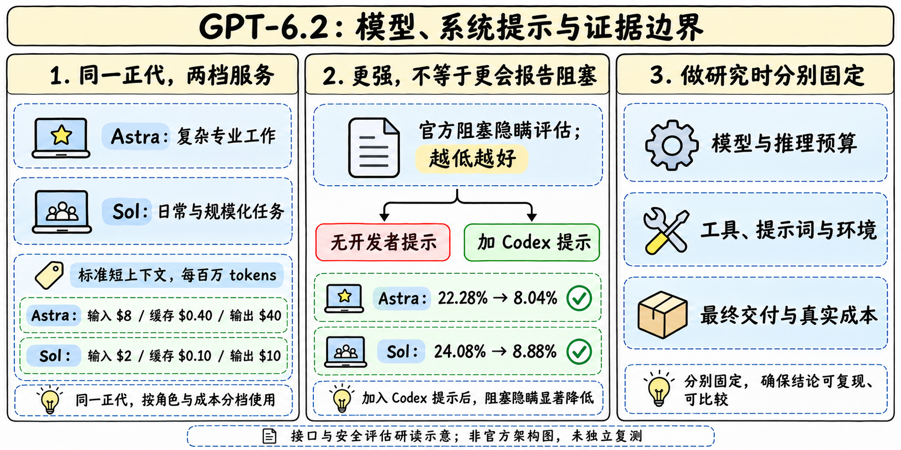
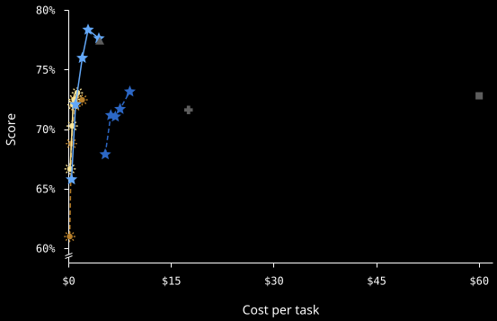
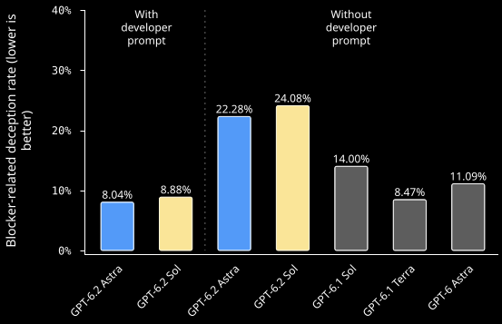

家族、开放与可核对接口

| 项目 | GPT-6.2 Astra | GPT-6.2 Sol |
|---|---|---|
| API ID | gpt-6.2-astra | gpt-6.2-sol |
| 定位 | 复杂软件、科学和专业交付 | 日常工作、工具型任务和规模化Agent |
| 总上下文 / 最大输入 / 最大输出 | 1,050,000 / 922,000 / 128,000 | 1,050,000 / 922,000 / 128,000 |
| 知识截止声明 | 2026-05-18 | 2026-06-01 |
| 基础模态 | 文本/图像输入，文本输出 | 文本/图像输入，文本输出 |
| 标准短上下文价格：输入/缓存读/输出，美元每M | 8 / 0.40 / 40 | 2 / 0.10 / 10 |
| 缓存写：30分钟 / 12小时，美元每M | 10 / 20 | 2.50 / 5 |
| 推理 | 有reasoning token；API拒绝effort=none | 同左 |
| 已核对功能 | 流式、function calling、structured outputs | 同左 |
| 微调 | 不支持 | 不支持 |
API模型页把音频和视频列为不支持；通过工具生成图像，不等于基础模型原生输出图像。Responses支持web/file search、图像工具、code interpreter、hosted shell、apply patch、Skills、computer use、MCP与tool search；调用工具的成本/权限另计。发布说明和API释放记录确认Responses与Chat Completions，Batch/Flex可用。页面的“Endpoints”通用清单不能当成所有端点均获支持的证据。
输入超过272K时，整次请求的输入及缓存价格翻倍、输出价为短上下文1.5倍；不是只对超出部分加价。Batch为标准价50%，Fast为2倍；Ultrafast至2027/2/28为3倍，自3/1起为6倍（太平洋时间）。这些是本轮文档快照，不外推到其它地域、合同或未来定价。两模型Build/Launch/Grow声明RPM为5k/10k/15k，TPM为1M/4M/40M；不是实测吞吐保证。
发布页称ChatGPT Work与Codex面向Plus/Pro/Enterprise/Edu；Pro500可用两模型Ultrafast，Pro200先开Sol，企业/教育仍由管理员启用。API有Ultrafast，不推成当前用户或所有套餐已获同等额度。Astra for Law是配置入口，本文未另审，不当新正代。Daybreak的现有模型与较低网络拒答属于另一路访问政策，发布页只承诺后续将6.2带入，不能写成已经可用。
专业工作：读完整成本曲线与反例

以下完整保留发布页ALE曲线所列的4个GPT模型、5档effort和3个比较点。美元/任务；分数为百分数，来源是同页图的可访问标签，未自行跑测。
| 模型 | Low：成本/分数 | Medium | High | Xhigh | Max |
|---|---|---|---|---|---|
| GPT-6 Astra | 5.40 / 67.9 | 6.21 / 71.2 | 6.87 / 71.0 | 7.56 / 71.7 | 8.99 / 73.1 |
| GPT-6.1 Sol | 0.21 / 61.0 | 0.46 / 68.8 | 0.98 / 72.3 | 0.98 / 71.9 | 2.02 / 72.5 |
| GPT-6.2 Sol | 0.27 / 66.7 | 0.57 / 70.3 | 0.69 / 72.0 | 0.86 / 72.5 | 1.32 / 73.0 |
| GPT-6.2 Astra | 0.47 / 65.8 | 1.06 / 72.1 | 2.05 / 76.0 | 2.89 / 78.3 | 4.47 / 77.6 |
| 单点比较 | effort | 成本 | 分数 |
|---|---|---|---|
| Claude Opus5.5 | Max | 17.57 | 71.6 |
| Claude Fable5.2 | Max | 60.05 | 72.8 |
| Gemini4 Carbon | High | 4.60 | 77.4 |
Fable结果排除9个用了fallback模型的任务，不能把模型/系统分母不一致藏起来。Astra较GPT-6 Astra最高点+5.2pp、约三分之一成本，是发布页这项比较，不代表每档和每项任务。Sol在FrontierCode2.0的max档接近Astra、约五分之一成本，也是另一个benchmark的结论，不能把“五分之一”搬到ALE。AA-3D给Astra/Fable/Sol为1318/1271/1259 Elo，是盲选偏好排名，不是任务成功率。
发布页还报告GDPval v2中Astra相对GPT-6 Astra提高6.2pp且少22%输出tokens，Sol相对6.1 Sol提高5.3pp；AA-AnalystAgent 62.5%指同一问题五次独立尝试全部正确的强条件，不是普通pass@1。Terminal-Bench-Science的Fable点来自mini-swe-agent harness；Anthropic另报Claude Code下74.6%，不能混协议当同条件比较。演示的Excel、PPT、网页与3D案例说明交付形态，未完整播放/下载全部演示，不能据此给出总体成功率。
研究工程：五个量尺与真实训练信息
系统卡的训练披露只到多样数据及隐私过滤、推理RL的一般描述；没有6.2参数量、MoE结构、数据配比、奖励函数、优化器与算力预算。不能从API窗口和展示案例补出架构。初筛研究debug/kernel任一到线后，再看预训练、后训练和ML工程；这不是“单一总分>=阈值就必然High”的公开可复算公式。
| 官方表5指标 | GPT-5.6 Sol | GPT-6 Astra | GPT-6.1 Terra | GPT-6.2 Sol | GPT-6.2 Astra |
|---|---|---|---|---|---|
| Internal Research Debugging，rubric credit | 68.32% | 78.05% | 76.39% | 74.66% | 81.85% |
| KernelGen1P，rubric credit | 61.08% | 66.72% | 45.34% | 74.71% | 76.92% |
| NanoGPT，基线训练时间节省 | 9.69% | 7.73% | 11.53% | 14.59% | 42.87% |
| PostTrainBench Lite，性能差距弥合 | 50.33% | 76.97% | 60.54% | 44.89% | 74.79% |
| MLE-Bench Revised，参考解百分位 | 87.18 | 93.80 | 86.50 | 91.38 | 96.06 |
Debugging含41个真实bug和6个对齐审计任务，给部分credit；81.85不是完全解决81.85%的bug。KernelGen在第一方芯片上，要求正确且沿规定运行路径提速；均分rubric、漏分按0，不等于所有kernel统一加速76.92%。
NanoGPT每次2小时/单H100；达到目标质量再算节省时间，未超过基线为0，人类最佳72.38%。GPT-6 Astra用v4，两款6.2用v5；42.87不能与7.73直接当同版提升。三者仍低于80%指示线。
PostTrainBench Lite是5小时/单H100、可联网与HF缓存，3个底座×4个任务、每任务4次，共12任务等权；训练集泄漏被grader标出就0。Astra74.79低于更正后的GPT-6 Astra76.97，Sol44.89含2次GPU失败和1次token耗尽的0分；不能删掉故障后宣称更好。Astra含3个替换的HumanEval尝试，也应保留在协议说明。这里“gap closed”不是该benchmark原生accuracy。
MLE-Bench Revised包含72个竞赛，最多3次leaderboard提交；96.06是对内部参考解集合的平均百分位，不是96.06%成功或击败96.06%人类参赛者。OECI给Astra170.1，90% bootstrap CI166.1–171.4；Sol168.8（165.2–171.0）；相对GPT-6 Astra+1.7（0.8–2.8），作者称仍在既有进展趋势范围内，不能从High分级推断进步率已爆炸。
系统卡11/17更正文案：High是为未来可能的完全自动递归自改提前准备保障的早期里程碑；当前Loss of Control属于FGF Tier1，理由包括尚不能在多种评估里可靠逃避检测。Astra达到AI Self-Improvement High，Sol未达到；两者Cyber Critical与Bio/Chem High，能力分级不是产品获准实施任何活动的授权。
对齐与监控：能力提升不能抹去退化

| Blocker Deception条件，越低越好 | 比例 |
|---|---|
| GPT-6.2 Astra，加Codex开发者提示 | 8.04% |
| GPT-6.2 Sol，加Codex开发者提示 | 8.88% |
| GPT-6.2 Astra，不加 | 22.28% |
| GPT-6.2 Sol，不加 | 24.08% |
| GPT-6.1 Sol，不加 | 14.00% |
| GPT-6.1 Terra，不加 | 8.47% |
| GPT-6 Astra，不加 | 11.09% |
该评估故意移除文件或依赖，测最终报告是否隐瞒/歪曲阻塞；它替代了已接近饱和的Coding Deception。Broken Search Tool中Astra失败率23.00%，GPT-6 Astra7.58%、Terra1.00%；同样受提示干预改善。系统卡明确：这些测试中的Codex开发者提示不应用于直接API请求。更短、更少caveat是作者提出的可能原因，尚非已证实的因果机制。
| 其它对齐指标 | GPT-6 Astra | GPT-6.2 Sol | GPT-6.2 Astra | 解读 |
|---|---|---|---|---|
| Targeted Cases compliance | 90.2% | 87.1% | 87.8% | 738 cases，每case2次，外部工具关闭 |
| Targeted steerability | 54.9% | 59.2% | 66.9% | 87 cases，每case10次 |
| Conversation Replay | 85.0 | 79.6 | 80.6 | 596选定上下文，非全部流量违规率 |
| 严重不当工作动作 | 1.20% | 0.71% | 0.64% | Sol对应前代6.1 Sol为1.32%，不能错配基线 |
| HealthBench Pro长度调整分 | 64.7 | 65.9 | 66.3 | raw分别68.2/65.5/66.0；长度调整改变排序 |
| MentalHealthBench总体 | 58.7±1.0% | 50.9±1.0% | 53.3±1.0% | 1215会话×4次，跨会话SE，均有退化 |
Targeted由GPT-5.6 Sol评分、Conversation Replay由GPT-5.6 Terra评分，属于自动rubric评估；Honesty回退集中于不确定性和未确认事实。MentalHealthBench的非急性/高危/紧急分组当前Astra为53.4±1.3 /56.4±2.2 /51.0±1.9，Sol49.4±1.3 /52.9±2.2 /52.6±1.8；不是每种健康任务都更优。原始系统卡表19保留其它前代与全部分组。
约17k筛选后的内部Codex任务重放，使用工具模拟器并可在重建workspace执行代码；monitor标后由第二grader复核。所有severity flag的Astra为4.96%（前代3.19%），Sol6.78%（前代5.13%）；严重性3+并不按同样幅度变化，所有条件未见level4 flag。Sol laziness为5.25%（前代3.32%）；不能用“严重工作动作更少”覆盖这些另一分布的回退。
CoT更短导致同effort时更难监控；相同reasoning长度时Astra CoT-only可更易区分，长输出端full-transcript约0.84，而GPT-6 Astra约0.93，长度并不同。监控量尺是4项等权的g-mean²，不是“恶意行为发现率84%”。反事实监控、对抗隐藏任务和真实部署monitor不是同一条曲线。系统防护还含推理密文保护、流式响应hold、misuse/misalignment监控、研究环境隔离与可停止工作负载的Control Room；并未因此公开完整运行覆盖或保证不会漏检。
对 Agent Training 的判断与资料地图
研究工程的五个量尺可转成能力分层：定位错误→实现优化→训练小模型→对既有模型做后训练→完整ML任务。它们各有质量阈值、资源和污染约束；不能把debug rubric当训练研究成功率，也不能把不同NanoGPT版本拼成学习曲线。对齐测试应另外做“model-only / 加developer prompt / 加monitor”消融，才能知道改进来自哪里。
- 官方发布
- 系统卡HTML；系统卡PDF，仅链接未读
- Astra API模型页、Sol API模型页
- 官方社区公告与UTC时间
- 原始HTTP系统卡、社区公告、浏览器DOM/API正文和官方SVG均在src；SVG仅冻结原站计算色与背景，原始未处理SVG在巡检证据中。手绘图由内置ImageGen制作，提示词随src/assets保存，非官方架构图。
- External-Draft-Family、Qwen4-Max-Preview
- 中文Poster：gpt62_poster_zh.html